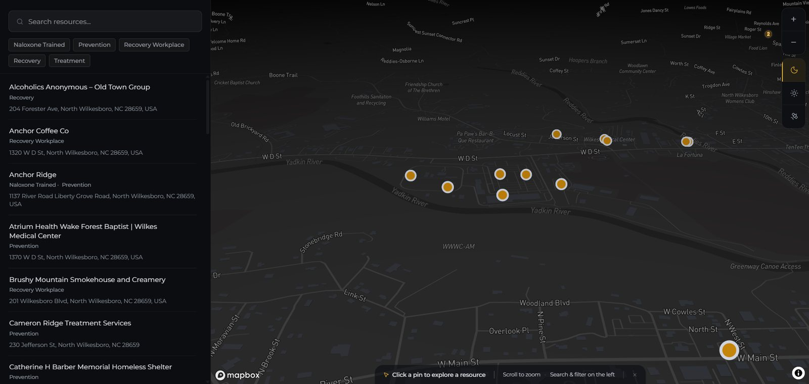
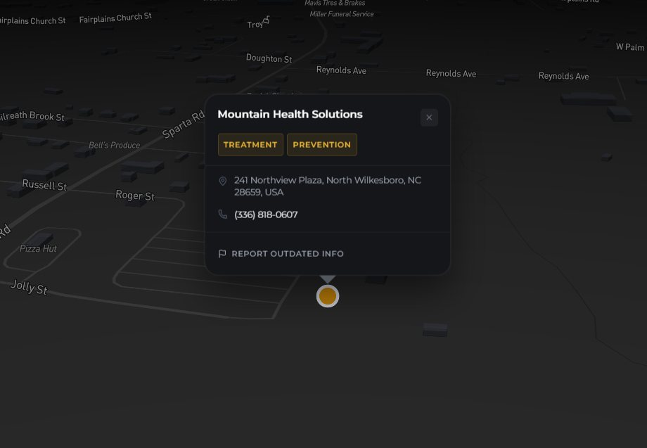
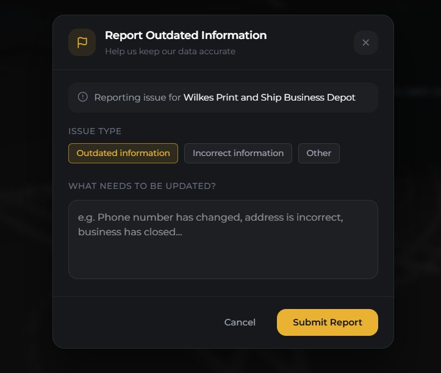
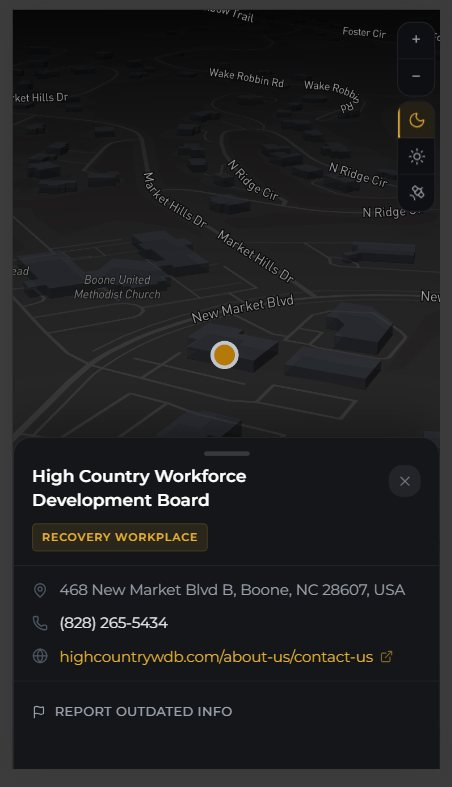
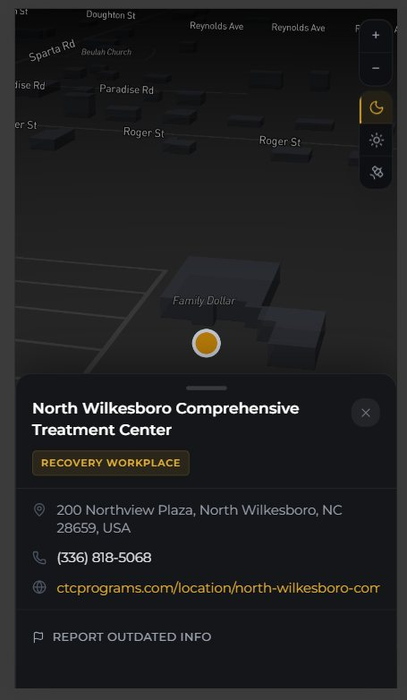
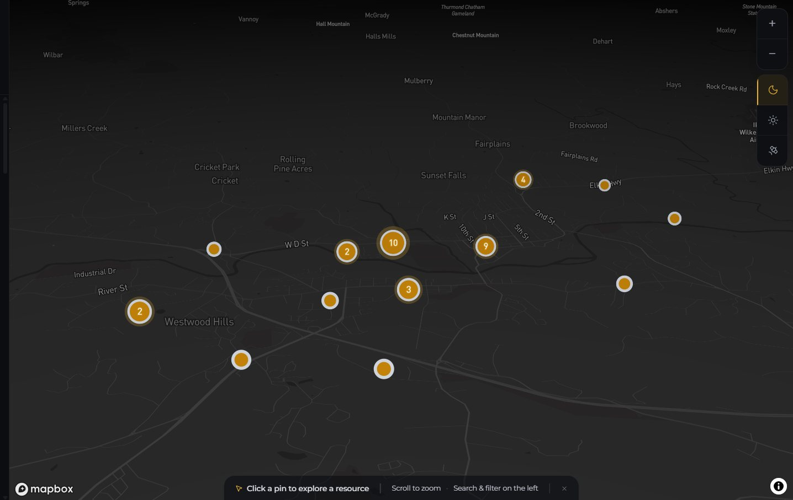
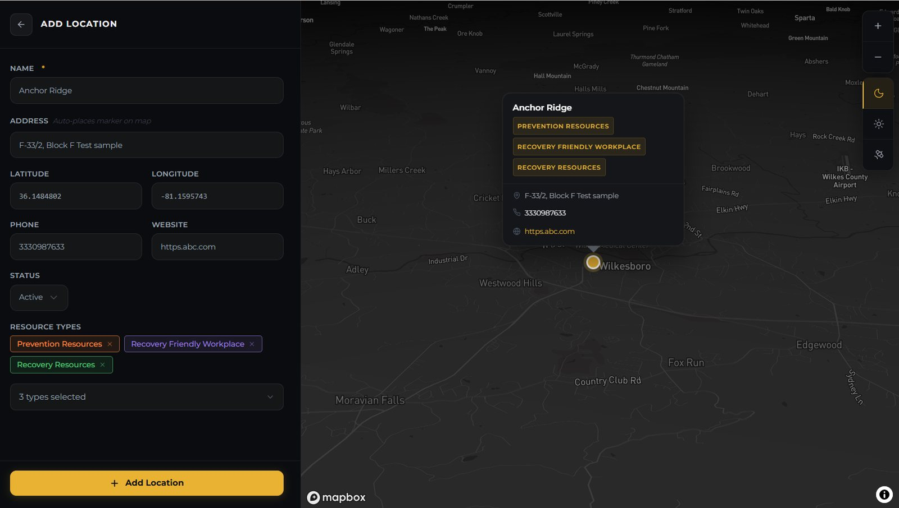

Client work · nonprofit · Wilkes County, North Carolina
Recovery Resource Map
One place to find recovery help in a rural county, and the tools for a small nonprofit team to keep it true.
- Client
- Recovery Revolution, a recovery and prevention nonprofit
- Role
- Sole designer and developer, through IMPACT Advantage Consulting
- Year
- 2026
- Stack
- React · Mapbox GL · Express · PostgreSQL + PostGIS

The brief
One map for a whole county's help
Recovery Revolution is a nonprofit working on addiction recovery and prevention in Wilkes County, in the foothills of north-west North Carolina. They wanted one place where anyone, whether a person in recovery, a family member or a case manager, could find nearby help: treatment, prevention programmes, employers who hire people in recovery, and businesses trained to give naloxone in an overdose.
A small team can't afford a tool that needs a developer to keep it running. So the brief was really two products: a public map that asks nothing of the people using it, and an admin side that busy staff can run on their own. I designed and built both, end to end, and it now runs embedded on the nonprofit's website.


01 · For the community
Find help in seconds
No account, no location permission, nothing to install. Type part of a name and the list and map narrow together; tap a kind of help to filter. Every pin opens a card with a phone number to tap, a website and the address, on a dark, street or satellite basemap.
- Report outdated info on every card, so the community helps keep listings right
- Each report emails staff straight away, rate-limited against spam


02 · On a phone
Built for the moment someone needs it
People often look for help from a phone, sometimes in a hurry. On small screens the card slides up from the bottom instead of covering the pin, and the phone number is one tap away.

Zoomed out, nearby listings merge into numbered clusters.
03 · What the map revealed
Help sits in one small part of the county
Of the 39 listings live today, 37 are within 5 km of central North Wilkesboro, and 26 within 2 km. The rest of a large, mostly rural county has almost none. Some of that is real, because services gather where people and roads do; some is just what has been listed so far. The nonprofit's reports are built to tell the two apart.

Adding a listing, shown with test values.
04 · For nonprofit staff
Keeping it true without a developer
Staff add a place by typing its name: Google Places fills in the address, coordinates, phone and website, and a live preview shows the pin before it's saved.
- Hide or mark closed instead of deleting; hidden listings don't exist to the public API
- Flags from the public arrive in a review queue with an unread badge
- Staff logins are checked by the server on every change
05 · Measuring reach, privately
Evidence of reach, without tracking anyone
A nonprofit needs to show its work reaches people, but off-the-shelf analytics would have meant cookies, a consent banner and visitor data sent to a third party, on a site about addiction. So I built a small first-party system: every search, filter, pin opened or phone number tapped becomes one anonymous row.
- No cookies. A visitor is a random id that lives for one browser tab.
- No IP addresses. The server turns each into a city and throws it away.
- Six reports: resource types viewed, searches (including ones that found nothing), most-opened listings, traffic, where visitors are, and a coverage-gap heatmap of where people keep looking.
How it works
Four jobs, one system
Every part of the stack serves one of four things the nonprofit needs. Follow a colour from the people on the left to the data on the right.
- 1Find help
- 2Flag a wrong listing
- 3Measure reach
- 4Keep it current
1Find help
Community→Public map→API→PostgreSQL + PostGISSearch, filter and tap; the API returns active listings only.
2Flag a wrong listing
Community→Public map→API→Resend→Staff inboxFive reports per 15 minutes per IP; every flag emails staff.
3Measure reach
Public map→API→Events table→Six reportsAnonymous events; the IP becomes a city and is discarded.
4Keep it current
Staff→Admin portal→API→Supabase AuthGoogle Places fills new listings; the API checks every staff request.
Built to be handed over
The nonprofit owns all of it
A small organisation shouldn't depend on whoever happened to build its tools. Alongside a user guide for staff, I wrote a transition plan that moves every service into accounts Recovery Revolution owns, through one shared role mailbox, then rotates every key so the original developer, me, no longer holds access.
- GitHubboth code repositories
- Supabasedatabase and staff logins
- RailwayAPI hosting
- Vercelwebsite hosting
- Mapboxthe map itself
- Resendflag emails